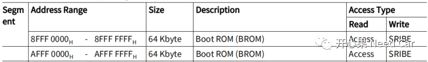
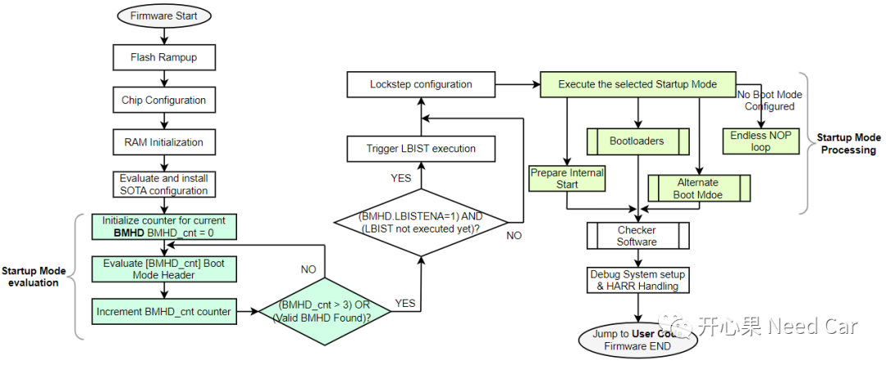
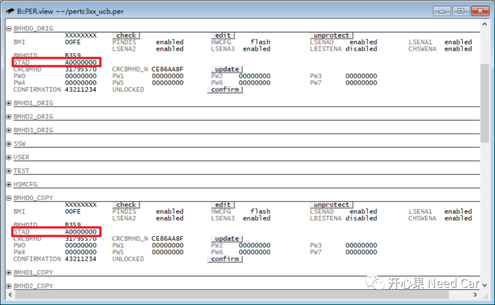
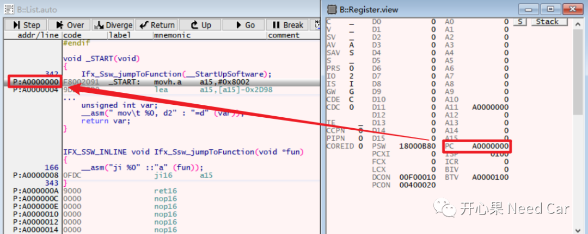
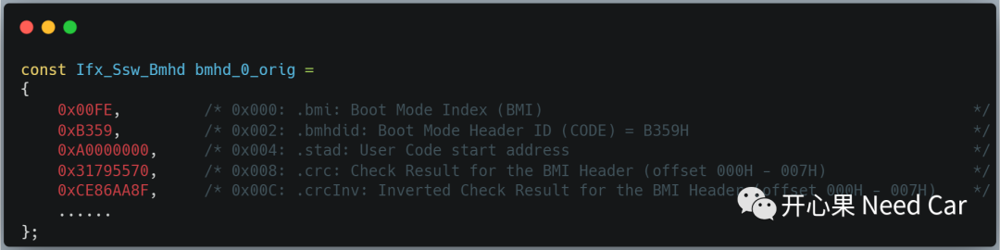
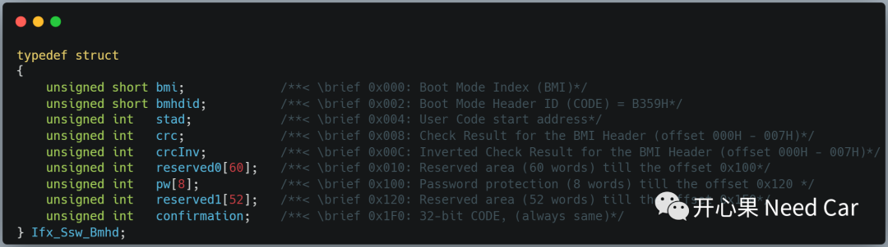
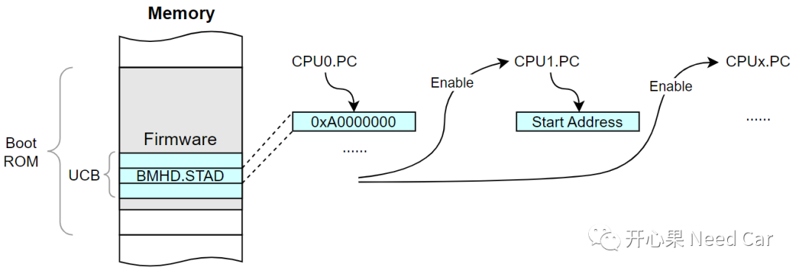
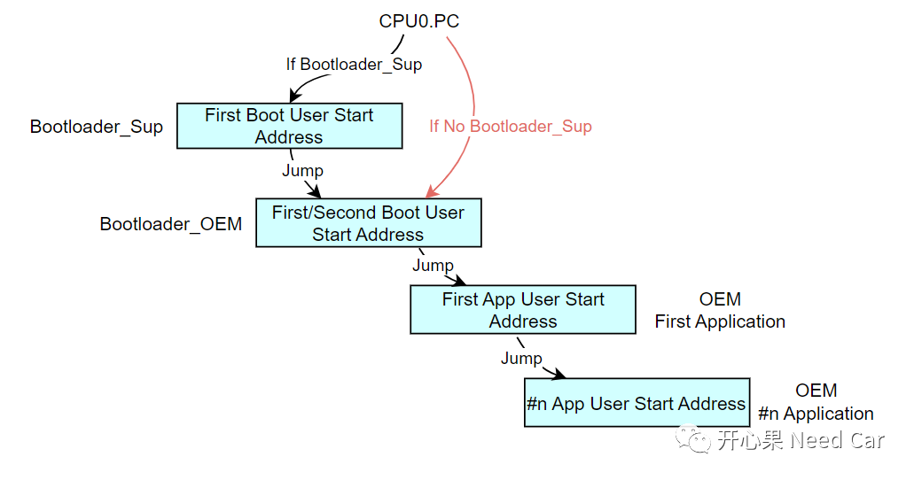

开心果 Need Car · 2023-11-28T07:13:00+08:00 · 微信原文
前文《英飞凌tc397:告诉你程序真正的启动过程》中，和大家聊过程序的启动流程，前文从链接文件（*.lsl）、*.map文件讨论了启动地址如何设置，但是，并没有讨论CPU从芯片何处获取启动地址。本文，接着讨论固件（Firmware），即：CPU如何从Firmware中获取启动地址。
1、固件（Firmware）与Boot ROM
芯片固件（Firmware）是一段软件程序，通常由芯片厂商预先烧录。一般情况下，用户无法修改和升级Firmware。当然，有些芯片支持固件更新。如果对Firmware不熟悉，不建议修改Firmware，有锁死和损坏芯片的风险。
（二）Boot ROM（BROM）
BROM是内置在芯片内的一块存储区域，这块存储区通常为只读存储区，可用于存储Firmware程序，之后，由Firmware引导程序启动。如下，为Tc3xx的BROM地址，Segment 8为Cached地址，Segment A为NoCached地址，两者对应同一块物理内存区。

2、Firmware启动流程



如上图，用户程序入口地址（0xA0000000）在BMHDx.STAD（x=0~3）中设定，对应代码如下：

在Tc3xx中，BMHD有4个BMHDx_ORIG（x=0~3）和4个BMHDx_COPY（x=0~3）,BMHDx均存储在UCB区域，每组BMHD（BMHD_ORIG和BMHD_COPY）需要同时设置。BMHD结构固定，如下所示：

3、Firmware到用户程序


往期精彩回顾